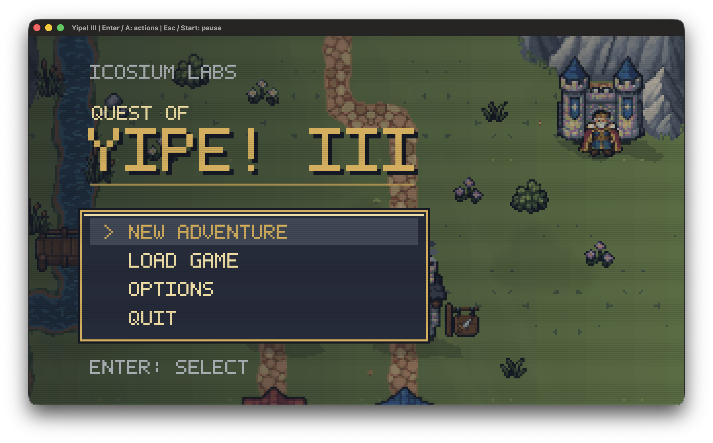
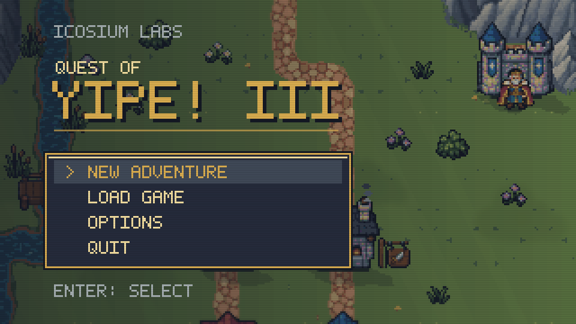
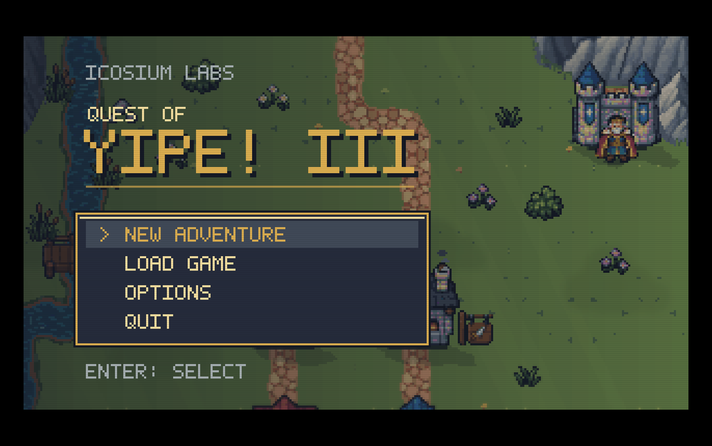
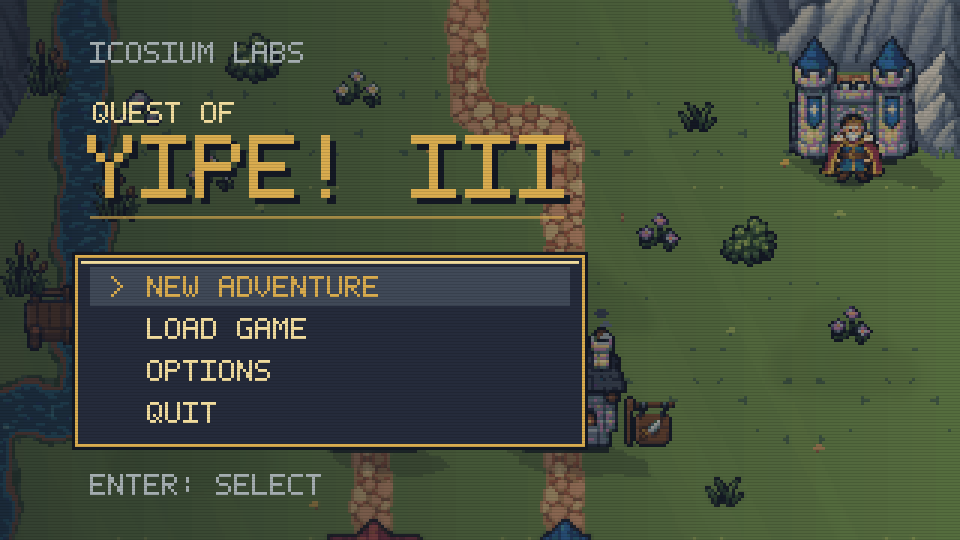

The regular executable now avoids SDL’s display-sync wait and retains the fixed 60 FPS timer. Two fresh-process normal-loop checks passed at 60.8 and 60.9 FPS, including resize and fullscreen transitions. No temporary launcher or package rebuild was used.




Evidence and limitations · Normal-loop check · Fresh-process repeat · Build log
A later manual menu check overlapped with live gameplay and sent Down/Enter/Escape into the adventure. Automated input was stopped and the user was informed; those captures are excluded from the test evidence above.